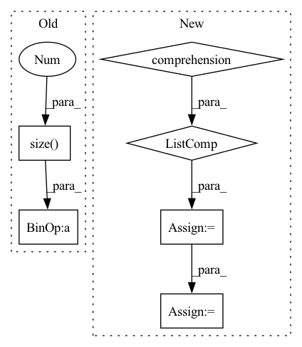

Pattern ID :37113
Before Change
def forward(self, pred, target):
log_prob = F.log_softmax(pred, dim=-1)
dist = torch.empty_like(pred).fill_(self.smoothing / (pred.size(-1 ) - 1))
dist.scatter_(dim=-1, index=target[..., None], value=(1 - self.smoothing))
loss = F.kl_div(log_prob, dist)
return lossAfter Change
chunked_target = torch.chunk(target, chunks=self.chunk, dim=0)
chunked_mask = torch.chunk(mask, chunks=self.chunk, dim=0)
log_prob = [F.log_softmax(p, dim=-1) for p in chunked_pred]
loss = [self.smoothed_loss(p, t, m)[None]\
for p, t, m in zip(log_prob, chunked_target, chunked_mask)]
loss = torch.cat(loss, dim=0).sum()
return loss / mask.sum()
def smoothed_loss(self, log_prob: torch.Tensor, target: torch.Tensor, mask: torch.Tensor) -> torch.Tensor:In pattern: SUPERPATTERN
Frequency: 3
Non-data size: 6
Instances Fragment ID: 106207892
Project Name: rick-mccoy/reformer-pytorch
Commit Name: 3411114d22e0bfcae2e106f5c82a3211da83f409
Time: 2020-02-29
Author: rickmccoy3141@gmail.com
File Name: model/labelsmoothing.py
M Class Name: LabelSmoothing
N Class Name: LabelSmoothing
M Method Name: forward(4)
N Method Name: forward(3)
M Parent Class: nn.Module
N Parent Class: nn.Module
M File Name: model/labelsmoothing.py
N File Name: model/labelsmoothing.py
M Start Line: 11
M End Line: 16
N Start Line: 13
N End Line: 24
Before Change
rec_features.append(rec_feature[:, :inputs[i].size(1)])
else:
rec_features.append(rec_feature[:, \
inputs[i-1].size(1):inputs[i-1].size(1)+ inputs[i].size(1 ) ])
"""
if i == 0:
rec_features.append(rec_feature[:, :outs[i].size(-1)])After Change
fuse = self.fuse(outs, training=training)
logit = self.head(fuse, training=training)
sizes = [torch.flatten(ii,start_dim=1).size(1) for ii in inputs]
rec_features = []
if training:
rec_feature = self.refiner(fuse, training=training)
curr=0
for i in range(input_num):
if self.has_padding:
if i == 0:
rec_features.append(rec_feature[:, :inputs[0][i].size(1)])
else:
rec_features.append(rec_feature[:, \
inputs[0][i-1].size(1):inputs[0][i-1].size(1)+inputs[i].size(1)])
else:
if i == 0:
rec_features.append(rec_feature[:, :sizes[0]])
curr = sizes[0]
else:
rec_features.append(rec_feature[:, \
curr:curr+sizes[i]])
curr += sizes[i]
"""
if i == 0:
rec_features.append(rec_feature[:, :outs[i].size(-1)]) Fragment ID: 106207940
Project Name: pliang279/multibench
Commit Name: 72e3344b766884b9160fd383b13945be06819481
Time: 2021-06-05
Author: blairc@andrew.cmu.edu
File Name: training_structures/Contrastive_Learning.py
M Class Name: MMDL
N Class Name: MMDL
M Method Name: forward(3)
N Method Name: forward(3)
M Parent Class: nn.Module
N Parent Class: nn.Module
M File Name: training_structures/Contrastive_Learning.py
N File Name: training_structures/Contrastive_Learning.py
M Start Line: 39
M End Line: 52
N Start Line: 37
N End Line: 56
Before Change
hid = torch.zeros(mels.size(0), 1, self.wav_rnn_dim, device=mels.device)
wav = torch.full(
(mels.size(0 ) ,), self.quant_dim // 2, dtype=torch.long, device=mels.device,
)
wavs = torch.empty(
mels.size(0),
mels.size(1) * self.hop_len,
dtype=torch.long,
device=mels.device,
)
for i, condition in enumerate(torch.unbind(conditions, dim=1)):
wav_emb = self.embedding(wav)
_, hid = self.wav_rnn(
torch.cat((wav_emb, condition), dim=1).unsqueeze(1), hid
)
logit = self.affine(hid.squeeze(1))
posterior = F.softmax(logit, dim=1)
wav = torch.multinomial(posterior, 1).squeeze(1)
wavs[:, i] = 2 * wav.item() / (self.quant_dim - 1.0) - 1.0
mu = self.quant_dim - 1
wavs = torch.sign(wavs) / mu * ((1 + mu) ** torch.abs(wavs) - 1)
return wavs
After Change
batch_size = len(mels)
device = mels[0].device
mel_lens = [len(mel) for mel in mels]
wav_lens = [mel_len * self.hop_len for mel_len in mel_lens]
max_mel_len = max(mel_lens)
mel_embs = []
for mel in mels:
mel = mel.unsqueeze(0)
mel_emb, _ = self.mel_rnn(mel)
mel_emb = mel_emb.squeeze(0)
mel_embs.append(mel_emb)
mel_embs = pad_sequence(
mel_embs, batch_first=True, padding_value=float(self.quant_dim // 2)
)
mel_embs = mel_embs.transpose(1, 2)
conditions = F.interpolate(mel_embs, scale_factor=float(self.hop_len))
conditions = conditions.transpose(1, 2)
hid = torch.zeros(1, batch_size, self.wav_rnn_dim, device=device)
wav = torch.full(
(batch_size,), self.quant_dim // 2, dtype=torch.long, device=device,
)
wavs = torch.empty(
batch_size, max_mel_len * self.hop_len, dtype=torch.long, device=device,
)
for i, condition in enumerate(torch.unbind(conditions, dim=1)):
wav_emb = self.embedding(wav)
_, hid = self.wav_rnn(
torch.cat((wav_emb, condition), dim=1).unsqueeze(1), hid
)
logit = self.affine(hid.squeeze(0))
posterior = F.softmax(logit, dim=1)
wav = torch.multinomial(posterior, 1).squeeze(1)
wavs[:, i] = 2 * wav / (self.quant_dim - 1.0) - 1.0
mu = self.quant_dim - 1
wavs = torch.true_divide(torch.sign(wavs), mu) * (
(1 + mu) ** torch.abs(wavs) - 1
)
wavs = [
wav[:length] for wav, length in zip(torch.unbind(wavs, dim=0), wav_lens)
]
Fragment ID: 106207895
Project Name: yistlin/universal-vocoder
Commit Name: a2f043170a0335459db6b45b7d8dc692db9a00f5
Time: 2020-10-06
Author: yishen992@gmail.com
File Name: models/universal_vocoder.py
M Class Name: UniversalVocoder
N Class Name: UniversalVocoder
M Method Name: generate(2)
N Method Name: generate(2)
M Parent Class: nn.Module
N Parent Class: nn.Module
M File Name: models/universal_vocoder.py
N File Name: models/universal_vocoder.py
M Start Line: 58
M End Line: 88
N Start Line: 63
N End Line: 120